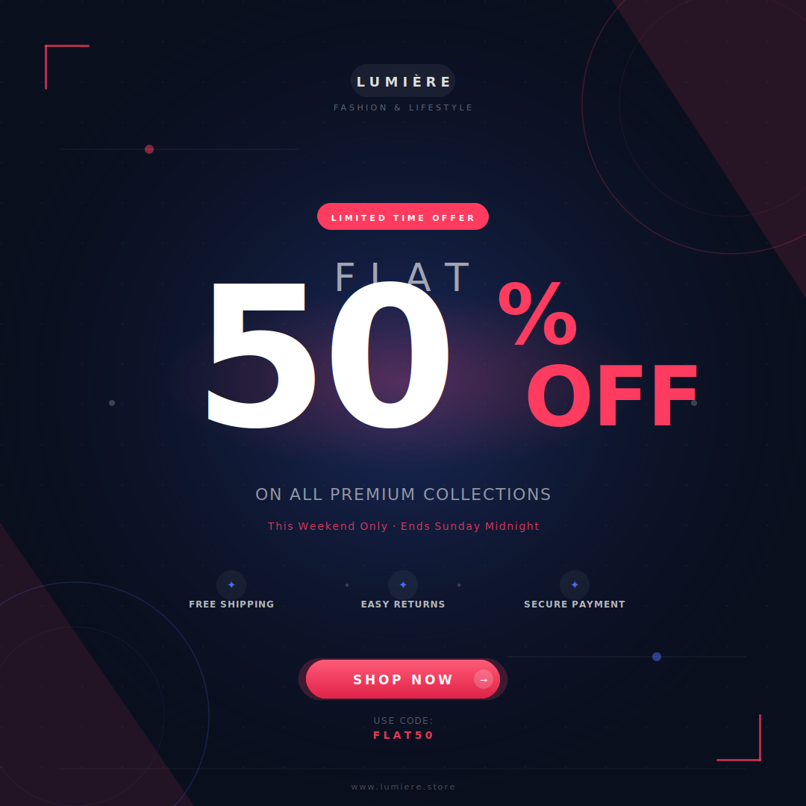

Flat 50% OFF Creative
Final visual plus editable AI, SVG, PSD, and QA note for quick review.
Graphic design intern / AI workflows / LLM post-training support
I am applying for graphic design roles focused on AI workflows. I can create and validate high-quality image assets, review visuals for readability and hierarchy, organize editable files, and support SFT, RLHF, evaluation, and quality-review pipelines with a design-aware technical mindset.
Currently preparing graphic design, image curation, and AI workflow assets

Flat 50% OFF social creative with final output and editable files for review.
Final visual plus editable AI, SVG, PSD, and QA note for quick review.
Typography, contrast, visual hierarchy, spacing, brand polish, and file organization
Adobe Photoshop, Illustrator, SVG, PNG exports, structured file handoff, Python, AI evaluation
I combine design review with data validation, AI evaluation, and disciplined reviewer-ready deliverables.
Prepared final social creative plus editable design files for AI dataset and assessment review.
Reviews typography, contrast, layout, offer priority, spacing, alignment, and brand readiness.
Comfortable with structured validation, evaluation thinking, SFT/RLHF concepts, and reviewer feedback.
Review first
Target role fit
I can support image dataset creation, visual validation, hierarchy checks, structured data review, and LLM post-training workflows across SFT, RLHF, evaluation, and quality review. My software background helps me treat design work as repeatable, organized, and measurable output.
A brand-ready square advertisement prepared with strong typography, contrast, spacing, offer hierarchy, and editable delivery files.
Comfortable creating, labeling, checking, and organizing image assets for AI datasets.
Reads hierarchy, typography, contrast, alignment, lighting, readability, and brand polish.
Experience measuring model outputs, debugging edge cases, and translating results into metrics.
Works cleanly with files, versions, documentation, reviewers, and repeatable validation steps.
More GitHub work
Resume
Best all-around version for AI workflow, Python, data, and technical design-adjacent roles.
Open general resumeFrames Python, backend systems, AI applications, data handling, and deployment experience.
Open Python resumeCovers sensor data processing, real-time monitoring, edge-to-cloud concepts, and automation.
Open IoT resumeCovers Python, C++, OOP, API development, debugging, optimization, and documentation.
Open software resumeExperience
Ready to contribute to visual data generation, image quality validation, design assessment tasks, reviewer collaboration, and LLM training pipelines including SFT, RLHF, and evaluation.
Built an invoice analysis pipeline that extracted document fields with around 90% accuracy, saved analysts about 3 hours per report, and translated results into CO2e business metrics.
Built 6+ Power BI dashboards, optimized ASP.NET Core REST APIs, automated Microsoft Fabric and Azure Data Factory pipelines, and supported Azure deployments for data-driven reporting.
Developed a CNN, BiLSTM, and attention-based deepfake audio detection model using MFCC and mel-spectrogram features with 99.33% accuracy across multiple accent groups.
Designed a sensor-data monitoring concept with Python-based ingestion, real-time alerts, dashboard metrics, and edge-to-cloud automation thinking.
About
I am Dev Kumar Dahiya, a Computer Science and Engineering student at Amity University, Noida, with an 8.5 CGPA and practical experience across Python, AI, computer vision, cloud data platforms, dashboards, and design-focused AI workflows.
My strongest work combines model thinking with product execution: extracting information from documents, evaluating outputs against ground truth, deploying interactive AI demos, and building APIs, ETL workflows, dashboards, and monitoring concepts that support real users. I am positioning this mix toward image curation, visual QA, dataset validation, and LLM post-training support.
"I want to develop, evaluate, and optimize AI-driven solutions that solve real business problems."
Contact